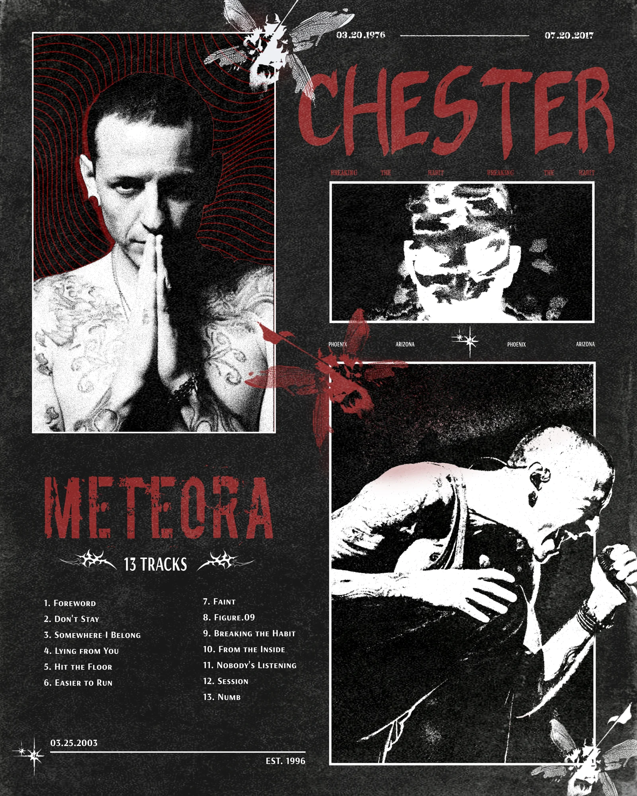

2026 · Visual · Poster
Chester 致敬海報 —— Meteora
I grew up on Linkin Park’s nu metal. The poster is pieced together from elements of their two most representative albums. Red for fire, to carry the heat of the music and the tattoos on his arms. The noisy background is there for the force and the chaos in the sound. 從小熱愛 Linkin Park 的新金屬搖滾曲風。 利用兩張最具代表性的專輯元素去拼湊海報,並用火焰的紅色襯托搖滾的熱情與主唱手臂的刺青, 背景運用雜訊感襯托音樂的力量與混亂。
- Type
- Visual design · Poster
- Year
- 2026
- Brief
- Self-initiated — 自主練習,非委託案
- Subject
- Chester Bennington · Hybrid Theory (2000) & Meteora (2003)
- Palette
- Red, black, off white

Photographs belong to their photographers. Self-initiated, not official, not for sale. 照片屬於原攝影者。自主練習,非官方,不販售。